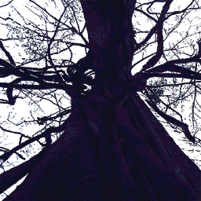

- Welcome to Touhou Wiki!
- Please register to edit. For assistance, check in with our Discord server or IRC channel.
Saigyou Ayakashi
Note: This article is about both a Bestiary entry and a Character.
Saigyou Ayakashi saigʲoː ajakaɕi (♫) | |
|---|---|
|
 Sprite of Saigyou Ayakashi in every game it's been in
| |
| Species |
Youkai cherry blossom |
| Abilities |
Charming people into resting in peace under its blossoms, then draining the life out of them |
| Age |
Over 1000 years (actual age is unknown, but is known to be older than Yuyuko Saigyouji) |
| Occupation |
Being a tree, bewitching people |
| Location |
Gardens of Hakugyokurou |
Appearances | |
| Official Games | |
| |
The Saigyou Ayakashi (西行妖 Saigyou Ayakashi) is a youkai cherry blossom tree, and is the largest cherry blossom in the gardens of Hakugyokurou. It has existed in the Netherworld longer than the Ghost Princess, Yuyuko Saigyouji herself. Some of the spirits in the Netherworld remember the Saigyou Ayakashi having the most beautiful blossoms they had ever seen, but the cherry tree has not bloomed for ages. There currently seems to be a powerful seal within the Saigyou Ayakashi, leaving it unable to blossom at all during spring. Whether the tree is sealing something, or whether the tree itself is being sealed, remains a mystery to most outsiders.
Backstory[edit]
A long time ago, there lived a divinely talented poet who traveled around Gensokyo. When the poet became aware that the hour of his death drew near, he chose to begin his eternal rest under the most beautiful cherry tree he could find. After the poet's death, word of the beauty of the cherry tree began to spread across the land. That cherry tree has grown even more beautiful since then, charming many people into choosing to rest in peace beneath its blossoms.
After absorbing the blood of so many people, it turned into a youkai cherry tree with the ability to lure people to their death on its own, and came to be known as the Saigyou Ayakashi. Eventually, the beautiful blossoms of the Saigyou Ayakashi were sealed away, using the bodies of Yuyuko and several others buried beneath it, and now remains within Hakugyokurou.
Character Basis[edit]
Name[edit]
The poet referred in the Saigyou Ayakashi's story is likely Saigyou, an ancient Buddhist poet who often sung of his love of cherry blossoms and his desire to die beneath flowers. Ayakashi is a general term for supernatural beings, very similar to youkai (the kanji for ayakashi [妖] is identical to the you in youkai [妖怪] ). The tree's name would mean something like "Youkai (Tree) of Saigyou".
Design[edit]
Shown on its sprite, Saigyou Ayakashi is simply a very large cherry blossom tree which never fully blooms. It has no leaves in it.
Story[edit]
During the events of Perfect Cherry Blossom, Yuyuko Saigyouji, the ghost of the human Yuyuko, attempted to overpower the seal on the Saigyou Ayakashi in order to both see the legendary blossoms, and to resurrect the soul that was sealed within. However, Yuyuko was unaware that the sealed soul was in fact her own, and thus all of Yuyuko's attempts to unseal the soul failed due to her unconscious self-preservation.
Relationships[edit]
| Attention: This section is a stub and it needs expanding with more information related to the section's topic. If you can add to it in any way, please do so. |
- Yuyuko Saigyouji (Sealed soul)
- Youmu Konpaku (Gardener)
Additional Information[edit]
Trivia[edit]
- It is unknown if the tree can still drain the life out of people while it's not in full bloom. However, as the charm of its flowers has been removed, and due to it now residing in the Netherworld, it is largely not a real danger.
- It appears in Yuyuko's spell card background in Perfect Cherry Blossom, Imperishable Night, Shoot the Bullet and Ten Desires.
Fanon[edit]
- Saigyou has occasionally been depicted with a shimenawa around the trunk. This could be due to one of the many other tree's such as one's seen in Immaterial and Missing Power and the illustration of the Netherworld in Perfect Memento in Strict Sense.
- In the aftermath of Yuyuko's suicide, it is sometimes shown as having been stained with blood splatter of said suicide
Official Sources[edit]
- 2003/08/17 Perfect Cherry Blossom - キャラ設定.txt (Youmu's profile, Yuyuko's profile)
| This page is part of Project Characters, a Touhou Wiki project that aims to write proper descriptions for all official characters of Touhou Project. Please keep the character page guidelines in mind when contributing. |